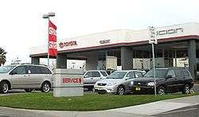

LOCATION OF TOYOTA P.L.C
|
Toyota has factories in most parts of the world, manufacturing or assembling vehicles for local markets in Japan, Australia, India, Sri Lanka, Canada, Indonesia, Poland, South Africa, Turkey, Colombia, the United Kingdom, the United States, France, Brazil, Portugal, and more recently, Argentina, Czech Republic, Mexico, Malaysia, Thailand, Pakistan, Egypt, China, Vietnam, Venezuela, the Philippines, and Russia. Toyota Motor North America headquarters is located in New York City, NY, and operates as a holding company in North America. Its manufacturing headquarters is located in Erlanger, Kentucky, and is known as Toyota Motor Engineering & Manufacturing North America. Toyota Canada Inc. has been in production in Canada since 1983 with an aluminium wheel plant in Delta, British Columbia, which currently employs a workforce of roughly 260. Its first vehicle assembly plant, in Cambridge, Ontario, since 1988, now produces Corolla compact cars, Matrix crossover vehicles, and Lexus RX 350 luxury SUVs, with a workforce of 4,300 workers. Its second assembly operation in Woodstock, Ontario, began manufacturing the RAV4 late in 2008.In 2006, Toyota's subsidiary Hino Motors opened a heavy duty truck plant, also in Woodstock, employing 45 people and producing 2000 trucks annually. Toyota has a large presence in the United States with six major assembly plants in Huntsville, Alabama, Georgetown, Kentucky, Princeton, Indiana, San Antonio, Texas, Buffalo, West Virginia, and Blue Springs, Mississippi. Toyota had a joint-venture operation with General Motors at New United Motor Manufacturing Inc. in Fremont, California, which began in 1984 and ended in 2009.It still has a joint venture with Subaru at Subaru of Indiana Automotive, Inc. in Lafayette, Indiana, which started in 2006. In these assembly plants, the Camry and the Tundra are manufactured, among others. Australia was one of the first countries to assemble Toyotas outside Japan. However, in February 2014, Toyota was the last of Australia's major automakers to announce the end of production in Australia. The closure of Toyota's Australian plant will be completed by 2017. Before Toyota, Ford and GM's Holden had announced similar moves, all citing an unfavorable currency and attendant high manufacturing costs.  Toyota Technical Center, Ann Arbor Charter Township, Michigan. |
 Toyota's new headquarters building in Toyota City, Japan.  Toyota Pavilion at the Expo in Aichi.  Principal headquarters building of Toyota.  A Toyota dealership in Fremont, California. |
||||||
| Home | Purchasing Shop | Comments |
|
Developer: Computer Engineering Second year Contact me: Tel-2917255287 or e-mail-nahomhagos03@gmail.com 2018 |
||